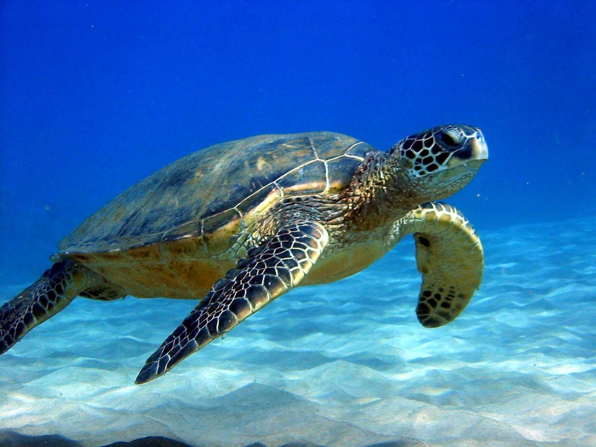
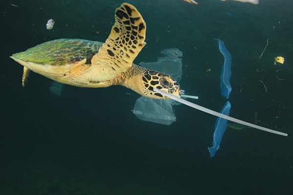
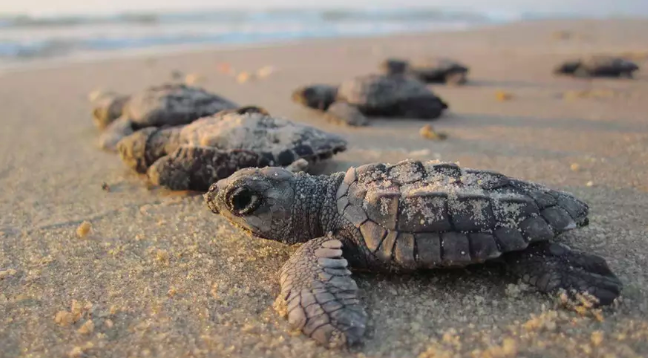
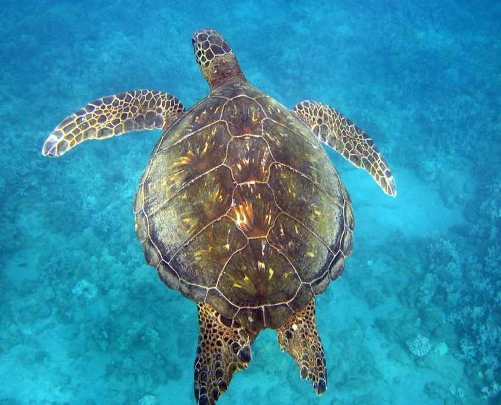
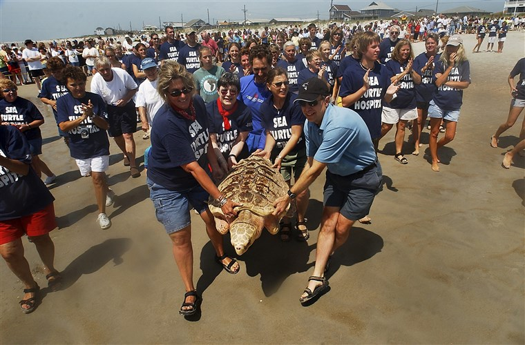

The Issue in Our Ocean:
The beach is a great place to spend your days at in the summer, but it is not just your home in the summer. The ocean and beach is home to many mammals and animals. Sea Turtles eggs hatch on the beach and when the baby sea turtles are old enough they make their way to the water. However, litter has become a big problem on our beaches and in our waters. The Sea Turtles are getting caught in trash like plastic bags and mistaking plastic bottles for food and dying from it. We need to save the sea turtles and throw our trash away!
Why are Sea Turtles Important?
Sea Turtles are beautiful animals, but in great danger. We need to protect these animals because they are important to our ecosystem. They control sponge distribution, feast on jellyfish so we won't get stung, and transport nutrients. Sea Turtles play a vital role on keeping our oceans healthy and more and more are being killed from careless people who don't throw their trash out. We need to protect these beautiful and defensless creatures as much as we can becuse they keep our ecosystem going in the ocean. 4,600 Sea Turtles are killed everyday in the US which is heart breaking.Sea Turtles need a clean ocean to live in so we need to do our part just like the turtles do. We need to clean our trash so no sea animals will get tied up and stuck in it or eat it and choke because they think it is food.
    Conservation...
The threats facing sea turtles are numerous and, for the most part, humans are the problem. For those of us trying to protect sea turtles, it is a mixed blessing that so many threats are human- caused. On one hand, it is very hard to change human behavior. On the other hand, at least there is hope for eliminating threats. If sea turtles were going extinct because of geological or climatic changes, there would be very little we could do to help.In contrast with some other at-risk species, perhaps sea turtles have been easier to manage because their threats are more tangible: They are accidentally trapped by fishermen or harvested by others as delicacies, aphrodisiacs or decoration. In the most extreme cases, like in Tortuguero, Costa Rica, nearly all female green turtles at one point had been exported for turtle soup.As part of our mission of sea turtle conservation, Sea Turtle, Inc. administers nesting sea turtle patrols on the beaches of South Padre Island and Boca Chica. The primary sea turtle that nests on these beaches is the Kemp's ridley. During nesting season, specially trained volunteers and interns search our beaches for nesting female sea turtles and their tracks. This allows us to find the nests and relocate them to a safe location. Sea turtle nests are protected through spring/summer incubation period.Seven different species of sea (or marine) turtles grace our ocean waters, from the shallow seagrass beds of the Indian Ocean, to the colorful reefs of the Coral Triangle, and even the sandy beaches of the Eastern Pacific. WWF’s work on sea turtles focuses on five of those species: green, hawksbill, loggerhead, leatherback and olive ridley.